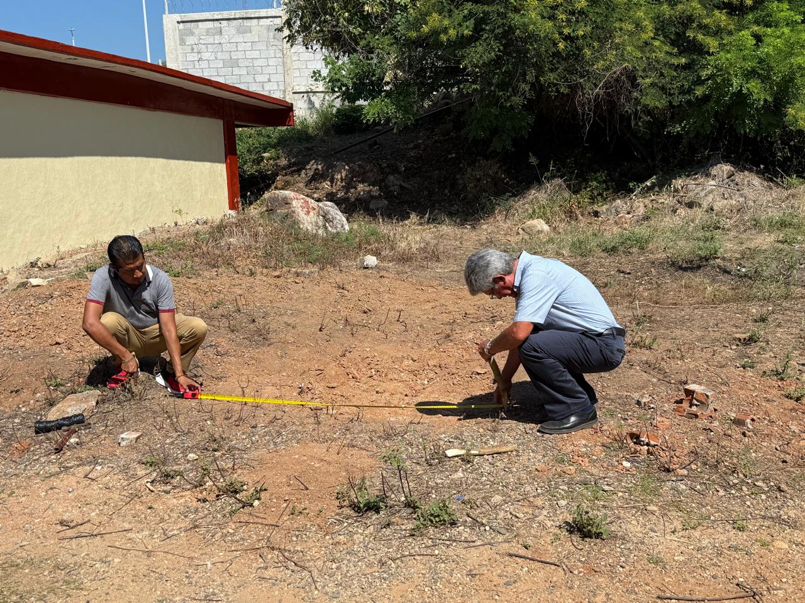
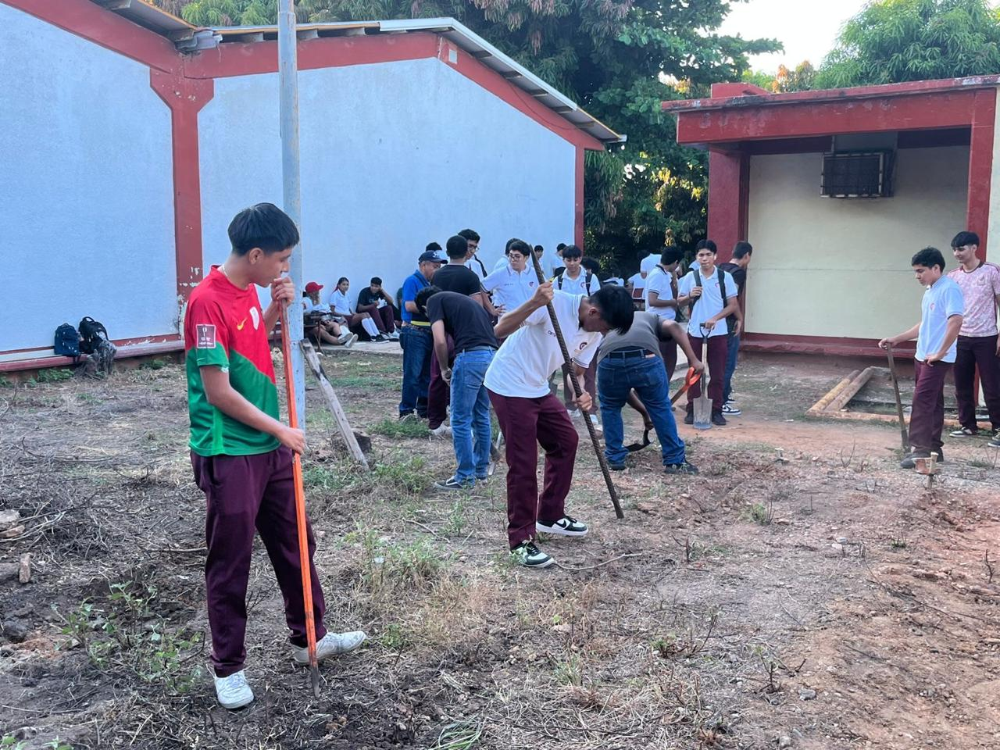
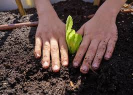
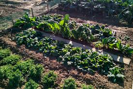

El proposito del huerto es fomentar una cultura más ecológica en la comunidad
escolar de la escuela CBTis 14, busca que los estudiantes puedan colaborar en
la escuela para mejorar los espacios educativos y tener una educación sobre el
ecosistema. Para esto la institución presenta este proyecto para sembrar cultivos
dentro del plantel y que aprendamos sobre los cuidados de las plantas.
En esta página queremos facilitar a los estudiantes el uso del huerto escolar para
que observen las distintas funciones que hay y así cuidemos de manera
adecuada el huerto del cual estamos manteniendo vivo.

Lista de cultivos
Estos son las verduras que sembramos en el huerto:
Materiales con los que estamos cuidando el huerto:
Espacio donde de el sol directamente
Tierra negra
Composta
Arena o peat moss
Regadera o maguera con difusor
Guates de jardín
Estacas o tutores
Palas o cucharones
Macetas o contenedores
Jabón potásico
Consejos de cultivo
1.Exposición solar: La mayoria de los cultivos necesitan de 6 a 8 horas de sol diario.
2.Calidad del suelo : Para un huerto necesitas sustrato suelto, fértil y con drenaje.
Si la tierra esta dura mezcla: composta, humus de lombriz y tierra negra.
3.Riego adecuado: Mantener humedad constante sin encharcar.
4.Espaciado correcto entre plantas: Cada cultivo posee requerimientos especificos de distancia.
Mantener un espaciado adecuado evita la competencia por luz, agua y nutrientes, además de reducir
la aparición de enfermedades por humedad excesiva entre follaje.
5.Control de plagas y enfermedades: Revisar periódicamente y aplicar controles preventivos
como neem o jabón pótasico.
6.Composta: Incorporarla regularmente para nutrir el suelo.
7.Ventilación: Dejar espacion para buena circulación del aire.
8.Temporada: Sembrar cultivos apropiados para cada estación.
9.Rootación: Cambiar el tipo de cultivo en cada ciclo para mantener la salud del suelo.
10.Proteción: Usar mallas y sistemas de riego que eviten daños por clima o animales.
Galeria



Aporte
La donación tiene como propósito recaudar dinero para los materiales que se estan
utilizando en el huerto, esto es sin fines de lucro y el dinero será ocupado
resposablemente y únicamente para el huerto. Agradecemos todo el apoyo que nos den.